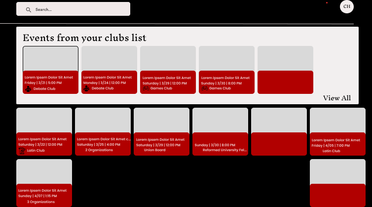

Agile Student Hub
A centralized campus platform where students share course reviews, rate professors, explore clubs, and exchange academic resources — shipped by a four-person Agile Scrum team with React, Supabase, and Vercel.
View project on GitHubThe problem
Course planning at Davidson scattered information across word of mouth, outdated spreadsheets, and one-off GroupMe threads. Students needed one place to compare classes, find clubs, and share resources without digging through disconnected channels.

My role
I served as Product Owner on a team of four. That meant writing user stories, prioritizing the backlog, running sprint planning, and keeping scope realistic while still pushing toward a deployable product each sprint. I also contributed directly to the React frontend and Supabase backend integration.
What we shipped
The team delivered authenticated user profiles, course review listings, professor ratings, club discovery, and an events feed. Supabase handled auth and PostgreSQL storage; the app deployed to Vercel for fast iteration. Sprint retrospectives helped us cut features that sounded good but did not serve the core user workflow.
What I learned
Student Hub was as much a teamwork exercise as a technical one. Being Product Owner forced me to say no to feature creep, communicate tradeoffs clearly, and keep four developers aligned — skills that matter as much as any framework on a resume.